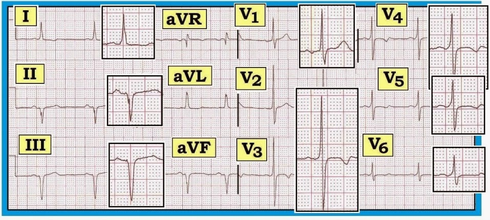
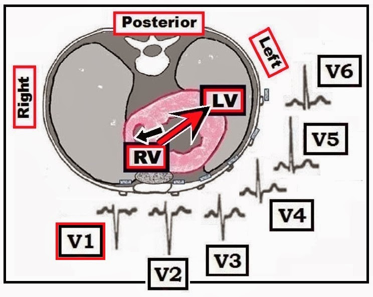
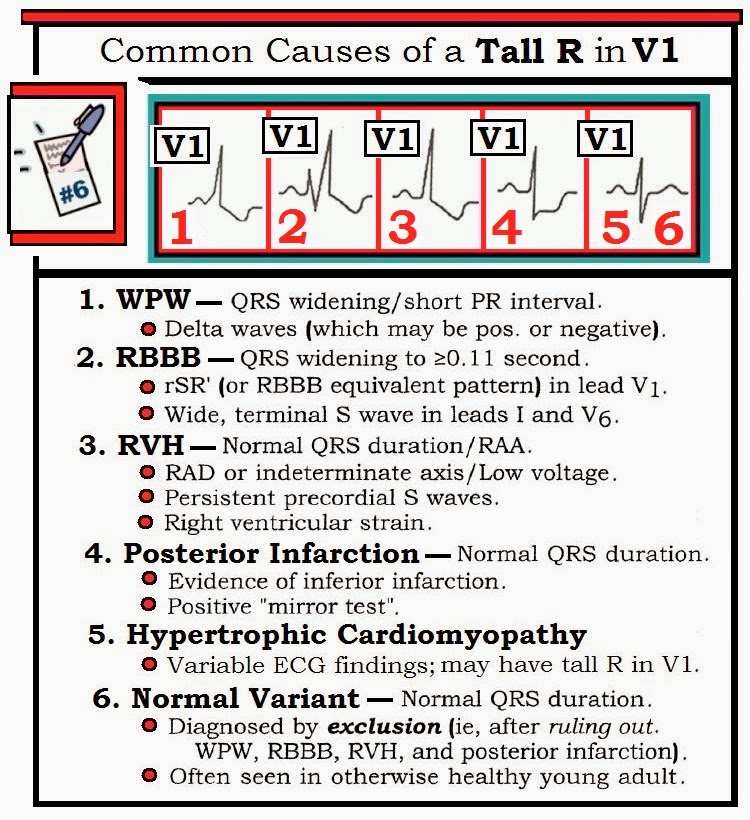
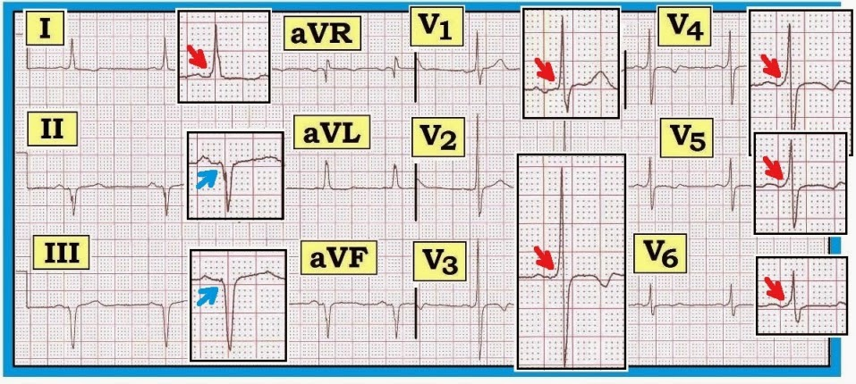

ECG Blog #81 — Sóng R cao ở V1 ...
Có một sóng R cao ở chuyển đạo V1 của điện tâm đồ dưới đây (Hình 1). Không có bệnh sử.
- Nguyên nhân nhiều khả năng của Sóng R Cao ở Chuyển đạo V1 này là gì?


Hình dạng Bình thường của QRS ở Chuyển đạo V1
Khi nhịp là nhịp trên thất — phức bộ QRS ở chuyển đạo V1 trong điều kiện bình thường phải chủ yếu âm. Đó là vì chuyển đạo phía bên phải này (V1) bình thường nhìn thấy hoạt động điện đi ra xa khỏi V1 (hay đi về phía thất trái lớn). Khái niệm này được minh hoạ trong Hình 2 dạng sơ đồ.
- Việc thấy hoạt động chủ yếu dương ở chuyển đạo V1 (sóng R bằng hoặc lớn hơn sóng S ở chuyển đạo phía bên phải này) — không “bình thường”. Đây là tiền đề của một trong 6 “Danh sách Thiết yếu” trong đọc điện tâm đồ của chúng tôi (Hình 3 bên dưới).


DANH SÁCH #6: Các nguyên nhân gây Sóng R Cao ở Chuyển đạo V1
Rất dễ bỏ sót dấu hiệu sóng R cao (hoặc tương đối cao) ở chuyển đạo V1. Cũng dễ như vậy để bỏ sót dấu hiệu vùng chuyển tiếp sớm — khi sóng R ở các chuyển đạo trước tim V2 hoặc V3 trở nên cao không tương xứng, sớm hơn nhiều so với dự kiến.
- MẤU CHỐT để không bỏ sót các dấu hiệu điện tâm đồ sóng R cao ở chuyển đạo V1 hoặc vùng chuyển tiếp sớm — là thường quy áp dụng Cách tiếp cận Hệ thống khi đọc điện tâm đồ. Đó là lý do chúng tôi đưa thành phần “R” (tìm sự tăng tiến Sóng R) vào khi đánh giá “Thay đổi Q-R-S-T”.
- Mục đích của DANH SÁCH #6 mà chúng tôi trình bày trong Hình 3 — là giúp dễ nhớ các nguyên nhân chính gây sóng R cao không tương xứng ở chuyển đạo V1. Cách tốt nhất để không bỏ sót nguyên nhân nào — là rà qua từng bệnh cảnh trong danh sách này mỗi khi bạn nhận thấy sóng R ở chuyển đạo V1 cao hơn bạn dự kiến.
- LƯU Ý: Nắm được các nguyên nhân này đặc biệt quan trọng — vì kết quả đọc điện tâm đồ bằng máy tính thường không phát hiện được sóng R cao hơn dự kiến ở các chuyển đạo V1,V2,V3.


Nhìn Kỹ Hơn vào DANH SÁCH #6:
Cách để thu hẹp xem bệnh cảnh nào trong Danh sách #6 nhiều khả năng là nguyên nhân gây sóng R cao ở chuyển đạo V1 — là tìm các dấu hiệu đi kèm ở các chuyển đạo còn lại.
- WPW — Tìm QRS rộng với sóng delta và khoảng PR ngắn.
- RBBB — Tìm phức bộ QRS rộng với dạng rSR’ (hoặc tương đương) ở chuyển đạo V1 và sóng S tận rộng ở các chuyển đạo I,V6.
- RVH — Tìm các tiêu chuẩn điện tâm đồ của RVH, gồm trục lệch phải hoặc trục không xác định; RAA (bất thường nhĩ phải – Right Atrial Abnormality); sóng R cao ở V1; “tăng gánh” thất phải (RV “strain”); sóng S tồn tại kéo dài ở các chuyển đạo trước tim (Xem ECG Blog #77).
- Nhồi máu cơ tim thành sau (Posterior MI) — Tìm bằng chứng điện tâm đồ của nhồi máu thành dưới đi kèm và “nghiệm pháp soi gương” (mirror test) dương tính (Xem ECG Blog #56).
- Bệnh cơ tim Phì đại — Xem bên dưới.
- Biến thể Bình thường — chỉ được xem xét sau khi đã loại trừ 5 nguyên nhân trên. Do đó, chẩn đoán “biến thể bình thường” là lý do gây sóng R cao không tương xứng ở chuyển đạo V1 — là một chẩn đoán loại trừ!
- T.B. (P.S.) — Danh sách của tôi trong Hình 3 không bao gồm tất cả. Ví dụ — các tình trạng ít gặp như tim sang phải (dextrocardia) hoặc đặt nhầm các điện cực ngực cũng có thể gây sóng R cao bất ngờ ở chuyển đạo V1. Các bệnh cảnh khác (tức ngộ độc thuốc, tăng kali máu, hội chứng Brugada) — cũng có thể làm thay đổi hình dạng phức bộ QRS ở chuyển đạo V1, nhưng các bệnh cảnh này thường sẽ được bệnh sử lâm sàng gợi ý.
LÀM THẾ NÀO để Nhận biết Bệnh cơ tim Phì đại trên điện tâm đồ?
Hãy lưu ý nguyên nhân thứ 5 trong Danh sách #6 gây sóng R Cao ở Chuyển đạo V1 — đó là HCM (bệnh cơ tim phì đại – Hypertrophic CardioMyopathy). Dù không quá thường gặp — HCM là một nguyên nhân tiềm tàng quan trọng gây đột tử (đặc biệt ở vận động viên trẻ). Siêu âm tim cho chẩn đoán xác định! Mặt khác — các dấu hiệu điện tâm đồ rất thay đổi. Chúng có thể gồm sóng R cao vừa phải ở chuyển đạo V1, gợi ý lực khử cực vách nổi bật. Cũng có thể gồm sóng Q vách sâu; LVH theo tiêu chuẩn điện thế; IVCD/LBBB — hoặc hoàn toàn không có thay đổi điện tâm đồ. Lý do nhấn mạnh việc nắm được HCM là nguy cơ đột tử mà HCM gây ra ở những người trẻ trước đó khoẻ mạnh. Dù vấn đề chi phí không cho phép sàng lọc đại trà bằng siêu âm tim cho mọi người trẻ — siêu âm tim được chỉ định khi có tiền sử ngất khi gắng sức; khi tiền sử gia đình dương tính với đột tử sớm; khi nghe thấy tiếng thổi không phải cơ năng — hoặc khi điện tâm đồ trước khi tham gia thể thao cho thấy các dấu hiệu bất thường có thể phù hợp với chẩn đoán này.
Quay lại với HÌNH-1: Nguyên nhân gây sóng R cao ở V1 là gì?
Hãy áp dụng Danh sách #6 cho điện tâm đồ trong Hình 1 (được in lại bên dưới trong Hình 4). Phức bộ QRS trông hơi rộng. Nhịp có vẻ là nhịp xoang — như gợi ý bởi sự hiện diện của sóng P dương ở chuyển đạo II. Khoảng PR ở chuyển đạo II trông bình thường. QT không kéo dài. Dấu hiệu nổi bật nhất trên bản ghi này — là sóng R rất cao ở chuyển đạo V1. Điều này rõ ràng không được dự kiến — và cần khiến ta xem xét 6 bệnh cảnh trong DANH SÁCH #6 như một lời giải thích khả dĩ.
- Chúng tôi ngờ rằng câu trả lời có lẽ cũng sẽ giải thích được: i) trục lệch trái rõ (và/hoặc phức bộ QS ở các chuyển đạo thành dưới); và ii) ST dẹt và sóng T đảo ngược nông thấy ở nhiều chuyển đạo.

TRẢ LỜI cho Hình 4:
Không có bệnh sử. Nhịp trong Hình 4 có vẻ là nhịp xoang. QRS trông hơi rộng. Khi rà qua Danh sách #6 (Hình 3) — Chúng tôi ghi nhận như sau:
- Đây rõ ràng không phải bản ghi “biến thể bình thường”. Ngoài sóng R cao ở chuyển đạo V1 — thực sự không có gì gợi ý RVH (không có trục lệch phải; không có RAA; không có “tăng gánh” thất phải ở chuyển đạo V1). Và dù gần như trông có vẻ có sóng Q ở thành dưới — đây không phải hình ảnh thường gặp của nhồi máu thành dưới, và “nghiệm pháp soi gương” không gợi ý nhồi máu thành sau.
- Cuối cùng — bệnh nhân không có RBBB. Không có dạng rSR’ ở chuyển đạo V1 — và không thấy sóng S ở chuyển đạo I. Phức bộ QRS cũng không rộng như thường thấy trong blốc nhánh.
- Bệnh nhân có WPW! Điều quan trọng cần hiểu là với WPW, phức bộ QRS không phải lúc nào cũng quá rộng. Đó là vì đôi khi có thể có dẫn truyền đồng thời xuống cả đường dẫn truyền bình thường lẫn đường phụ — dẫn đến tiền kích thích chỉ một phần. Chính nhờ nắm được DANH SÁCH #6 — mà ta tìm thật kỹ sóng delta mỗi khi thấy sóng R cao ở V1. Quan sát kỹ cho thấy có những sóng delta như vậy (mũi tên đỏ và xanh trong Hình 5).


=======================================
Để biết thêm thông tin — XEM:
- Xem ECG Blog #93 ( = Basic Concepts #6) — để ôn lại Cách tiếp cận Hệ thống khi đọc điện tâm đồ.
- BẤM VÀO ĐÂY — để tải bản pdf Mục 10.41 về Các nguyên nhân gây Sóng R Cao ở Chuyển đạo V1 (từ ECG-2014-ePub của chúng tôi).